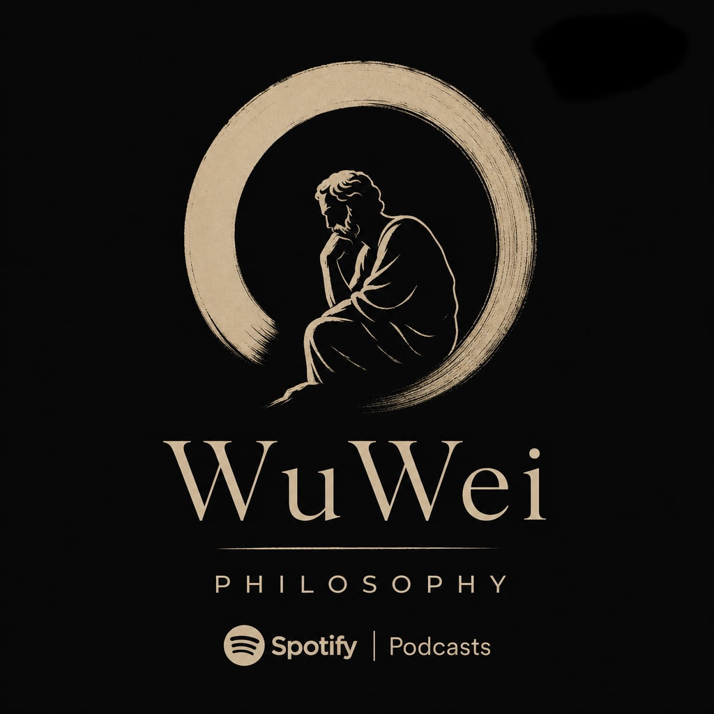

University lecture notes transformed into conversations. Each episode explores a philosophical topic — with the lecture notes available to read alongside.
Listen on SpotifyEpisodes
Metaphysics, Epistemology, Philosophy of Mind
Moral, Action Theory, Ethics, Politics